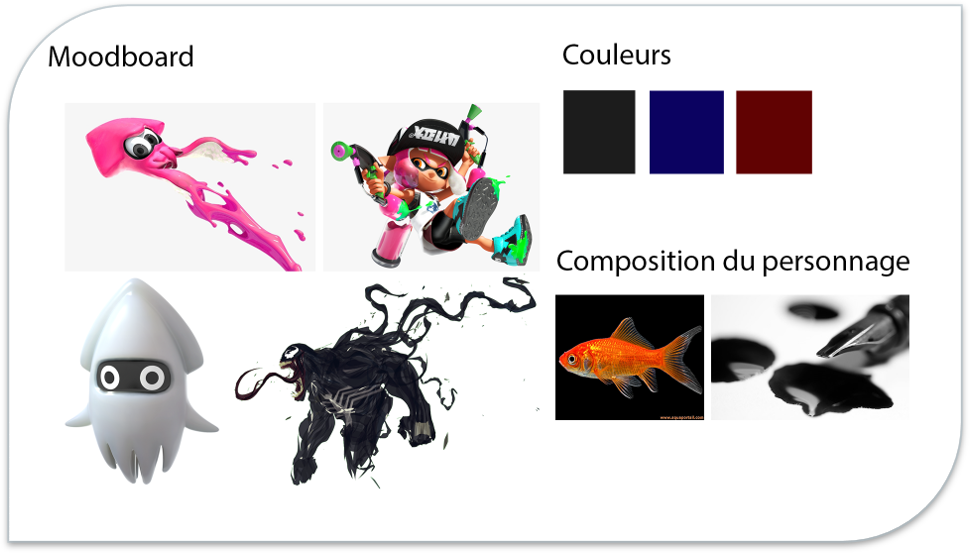
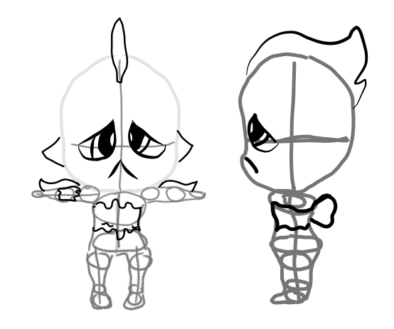
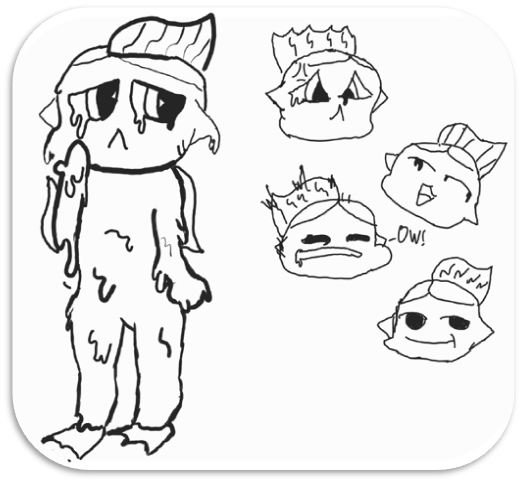
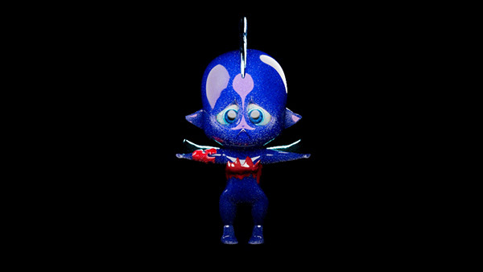
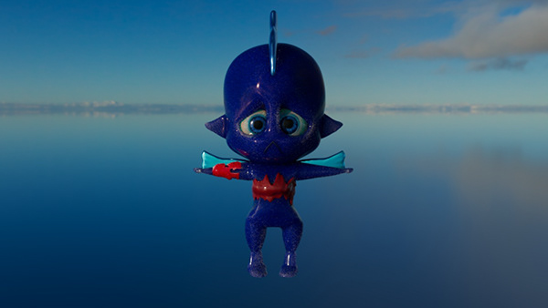
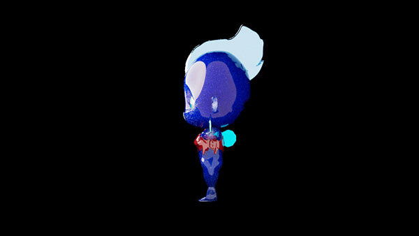

Encretit - Création d'un personnage
Processus







Description
Modélisation complète d'un personnage original avec les matériaux, UV, squelette (rig) et skinning.
Synopsis
L’espèce humaine est en voie d’extinction après une terrible catastrophe naturelle a rasé la planète Terre entière. Une nouvelle créature dont son origine est inconnue rentre dans le décor après ces événements, cette espèce faite à base d’encre que l’on appelle « Encretit » est sur le point de marquer une nouvelle génération sur Terre.
Compétences utilisés